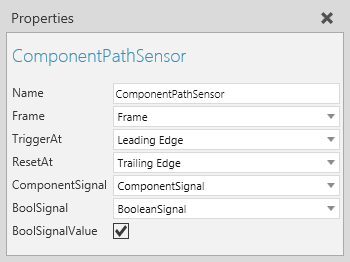

A Component Path Sensor allows you to detect components moving along a path.

| Name | Description |
| Name | Defines the name of the sensor. |
| Frame | Defines the Frame feature referenced as the physical location of the sensor. |
| TriggerAt | Defines the mode of the sensor for detecting components.
Leading Edge is triggered when the first edge of a component reaches the sensor. Origin is triggered when the origin of a component reaches the sensor. Trailing Edge is triggered when the last edge of a component reaches the sensor. None disables the sensor. |
| ResetAt | Defines the mode of the sensor for resetting itself after detecting a component. |
| ComponentSignal | Defines the Component Signal used to signal what component was detected by the sensor. |
| BoolSignal | Defines the Boolean Signal used to signal when a component triggers the sensor. |
| BoolSignalValue | Defines if BoolSignal sends a signal. A True value means a component triggered the sensor. A False value means the sensor has either been reset or not yet triggered by a component. Generally, BoolSignalValue is used to disable the use of BoolSignal in the sensor. |